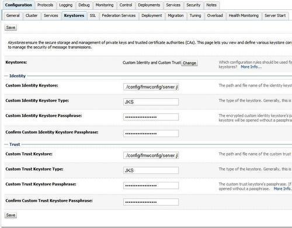
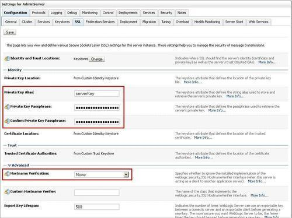
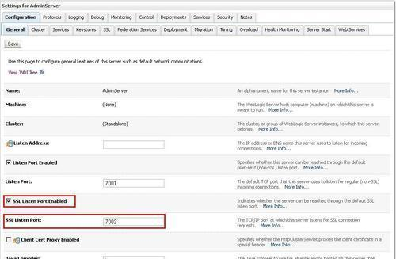
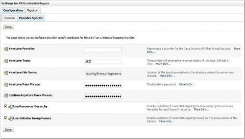

In this recipe, we will configure the OSB to use SSL. The WebLogic server standard installation already comes with a default certificate and keystore, but in this recipe we will use the custom keystore that we created in Chapter 11,Handling Message-level Security Requirements.
We will need access to Eclipse OEPE, soapUI client, and the server.jks and client.jks files.
First, we will configure the OSB server to use the server.jks keystore we created earlier.
In WebLogic console, perform the following steps:
./config/fmwconfig/server.jks into the Custom Identity Keystore field. JKS into the Custom Identity Keystore Type field. welcome into the Custom Identity Keystore Passphrase field. welcome into the Confirm Custom Identity Keystore Passphrase field. ./config/fmwconfig/server.jks into the Custom Trust Keystore field. JKS into the Custom Trust Keystore Type field. welcome into the Custom Trust Keystore Passphrase field. welcome into the Confirm Custom Trust Keystore Passphrase field.
Next, we have to configure the SSL identity of the server.
serverKey into the Private Key Alias field. welcome into the Private Key Passphrase field. welcome into the Confirm Private Key Passphrase field and click Save.
Next, we will configure the Admin Server in order to enable HTTPS traffic.

Next we need to create a PKICredentialProvider in the WebLogic security realm.
PKICredentialMapper into the Name field. JKS into the Keystore Type field. ./config/fmwconfig/server.jks into the Keystore File Name field. welcome into the Keystore Pass Phrase field. welcome into the Confirm Keystore Pass Phrase field.
Due to the fact that OSB uses the WebLogic security framework for SSL transport security, the whole configuration takes place in the WebLogic console. First, we need to configure the server to activate the SSL traffic. For the OSB cookbook, we use a development installation with the OSB installed on the Admin Server. If the OSB Server is installed on its own Managed Server, which will be the case in a production environment, then SSL needs to be enabled on all Managed Servers, where it is required. After that we configure the PKICredentialMapper on WebLogic for using key pair or certificate credential mappings.